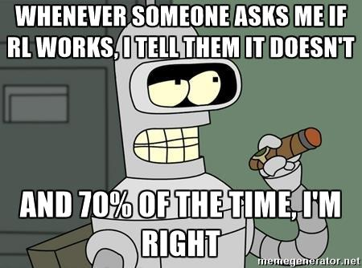

Critiques
Malgré les avancées qu'a connu le domaine du reinforcement learning surtout à partir de 2013 (papier de deepmind sur atari). Ce domaine fait face à plusieurs critiques de la part de la communauté scientifique. Ces critiques concernent à la fois les résultats obtenus, les méthodes utilisées et même dans des cas le paradigme considéré.
Au début de l'année 2018, Alex Irpan, chercheur chez Google, a publié un article sur son blog discutant les limites du reinforcement learning et pourquoi ça ne marche toujous pas. Il discute principalement les recherches de tels que Berkeley, Google Brain, DeepMind et OpenAI. L'article s'intitule : "Deep Reinforcement Learning Doesn't Work Yet".

impuissance par rapport aux méthodes classiques
Irpan explique que si le but final d'un projet est la performance, L'apprentissage par renforcement n'est que très rarement envisageable. Par exemple, il est facilement possible d'améliorer les performances des modèles de reinforcement learning sur Atari avec des méthodes classiques de Monte Carlo. Ceci est démontré sur le tableau suivant, issu de ce papier Ils comparent les scores d'un algorithme DQN (reinforcement learning) au score obtenu par un agent UCT (UCT est la version standard de Monte Carlo utilisée de nos jours).
Instabilité des résultats
Presque tous les algorithmes ML ont des hyperparamètres qui influencent le comportement du système d'apprentissage. Souvent, ceux-ci sont réglés à la main ou par recherche aléatoire. L'apprentissage supervisé est stable. Ensemble de données fixe, données terrain cibles. Si on modifie un peu les hyperparamètres, notre performance ne changera pas beaucoup. Tous les hyperparamètres ne fonctionnent pas bien, mais avec toutes les astuces empiriques découvertes au cours des années, de nombreux hyperparamètres montreront des signes de vie pendant l'entraînement. Ces signes de vie sont très importants, car ils vous disent que vous êtes sur la bonne voie, que vous faites quelque chose de raisonnable et que cela vaut la peine d'investir plus de temps. Actuellement, le RL profond n'est pas stable du tout, et c'est énormément ennuyeux pour la recherche.
La figure ci-dessous montre l'évolution de la fonction de récompense pour un même modèle avec des hyperparamètres identiques, la seule différence étant le random seed.
Manque d'applications dans le monde réel
Un problème qui revient assez souvent lorsqu'on parle de reinforcement est le manque d'applications concrètes. Si on s'éloigne des applications classiques telles que la robotique et les jeux vidéos, il est difficile de trouver une application adaptée au reinforcement learning.
En Octobre 2017, Jack Clark, Chercheur à OpenAI, a demandé via son compte tweeter à la communauté de citer quelques applications réussies du reinforcement learning liées au monde réel. Malheureusement, en dehors de l'application au systèmes de refroidissement de Google ainsi que des projets en robotique et véhicules autonomes, les réponses pertinentes n'ont pas été très nombreuses.